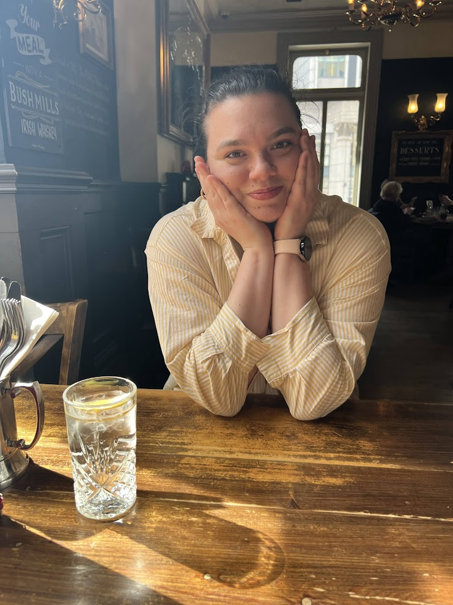
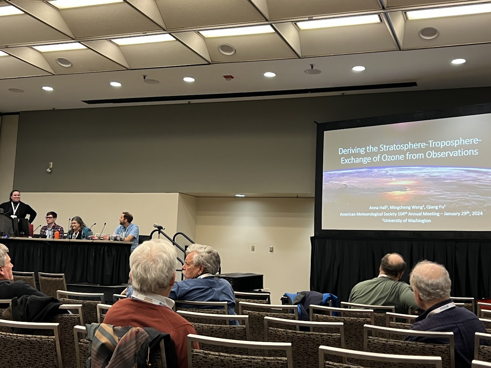
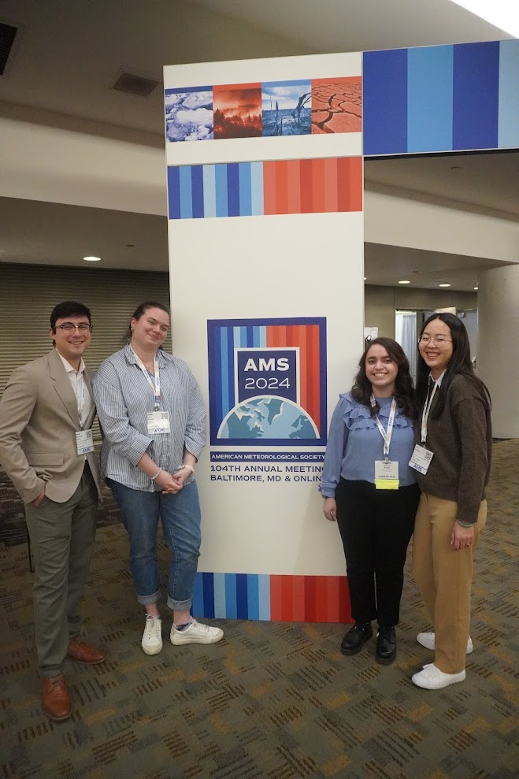
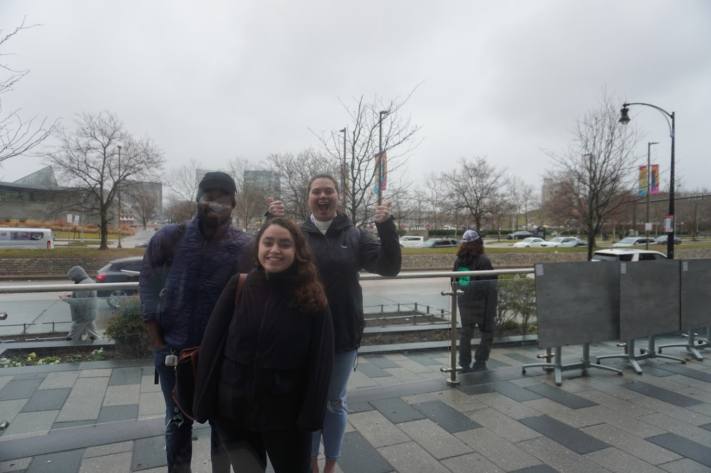
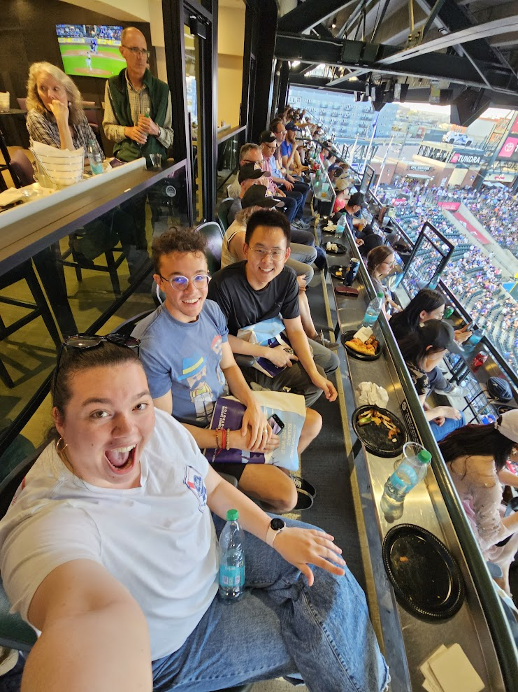
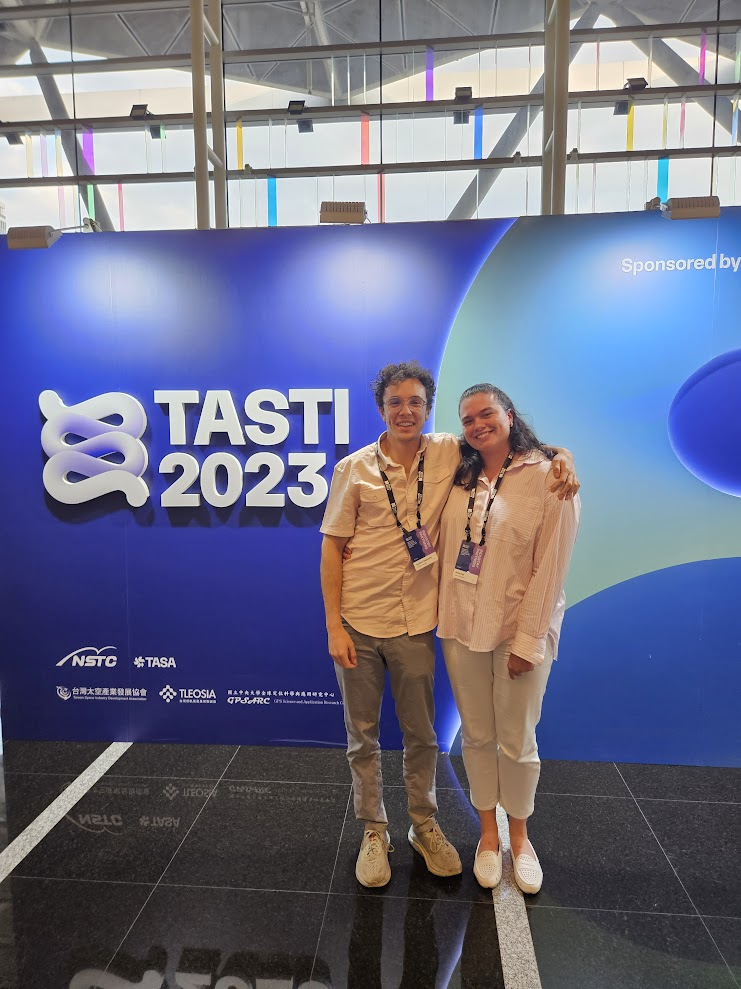
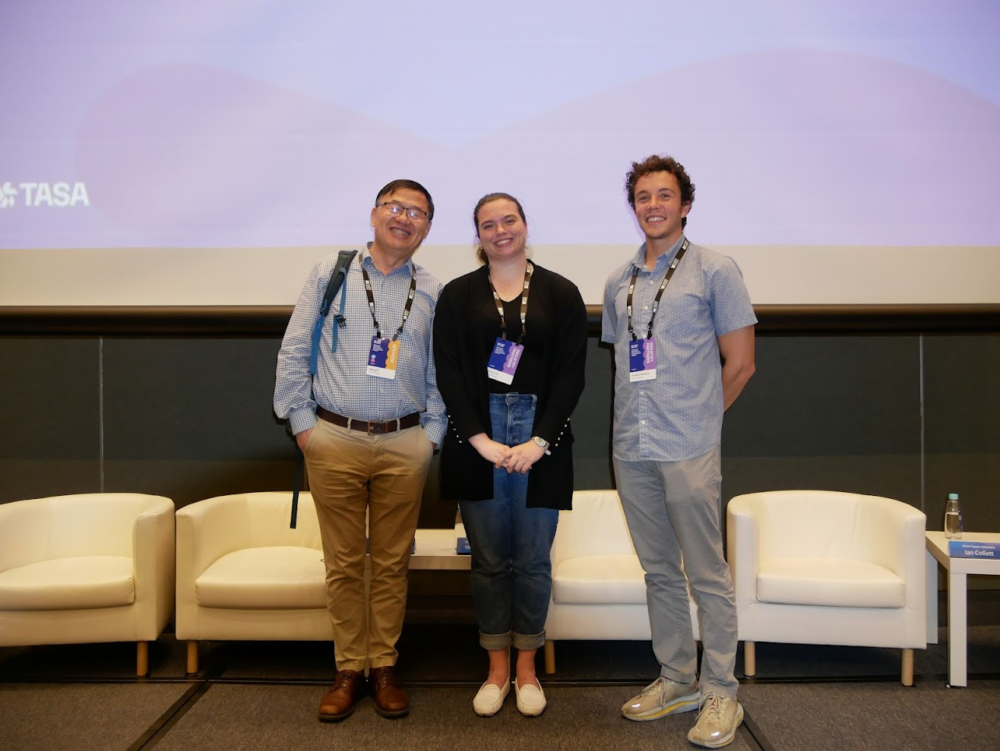

All About Anna
Hi! I’m Anna, a fourth year graduate student at the University of Washington in the Atmospheric and Climate Science Department studying the stratosphere–troposphere exchange, ozone transport, and climate variability. I also love baking, endurance sports, and building a life full of curiosity.
This website is a little mix of my academic life and the things that keep me grounded outside of research.

Baking my way through Grad School
On June 1st 2026 I became a PhD candidate, this officially started my 12 month countdown to graduation. I have two more papers to write and a whole hoard of stress to get through. One of the ways I relieve stress is through baking, I am going to post everything I bake here along with little stories about what's stressing me out at the time of bake. The level of stress is probably correlated with how complicated the bake is. Let's see how this goes...
My Triathlon Journey
I’m also on a triathlon journey! Admittedly, I swam in college so we have that going for us. I started my running journey in September 2025 and I consider biking to be easy because it's just sitting down. I will post my training updates here if I do a cool exercise or finally compete in my first triathlon.
Race Day Countdown 🏊♀️🚴♀️🏃♀️
Loading countdown...
Month Year
Publications
Here are some of my publications and research outputs:
- Hall, A.; Dong, C.; Fu, Q.; Solomon, S. (2026). Interannual Variability in the Stratosphere-Troposphere Exchange of Air Mass and Ozone in Chemistry Climate Models. In preparation.
- Mudhar, R.; Hall, A.; Huang, J.; Lee, R.W.; Palmeiro, F.M. (2026). QBOI-SNAP-QUOCA Workshop: Improved Simulations of the Stratosphere for Better Predictions of Weather, Climate and Extreme Events. Weather, 81, 15–17. doi:10.1002/wea.7788.
- Hall, A.; Fu, Q.; Dong, C. (2025). Revisiting the Stratosphere–Troposphere Exchange of Air Mass and Ozone Based on Reanalyses and Observations. Atmosphere, 16, 1050. doi:10.3390/atmos16091050.
- Wang, M.; Fu, Q.; Hall, A.; Sweeney, A. (2023). Stratosphere-Troposphere Exchanges of Air Mass and Ozone Concentrations From ERA5 and MERRA2: Annual-Mean Climatology, Seasonal Cycle, and Interannual Variability. JGR Atmospheres, 128, e2023JD039270. doi:10.1029/2023JD039270.
Resume / CV
You can view my CV below or download a copy.
Download My CV Open in New Tab
Photo Gallery
A little scrapbook of conferences, research, friends, and life lately.





